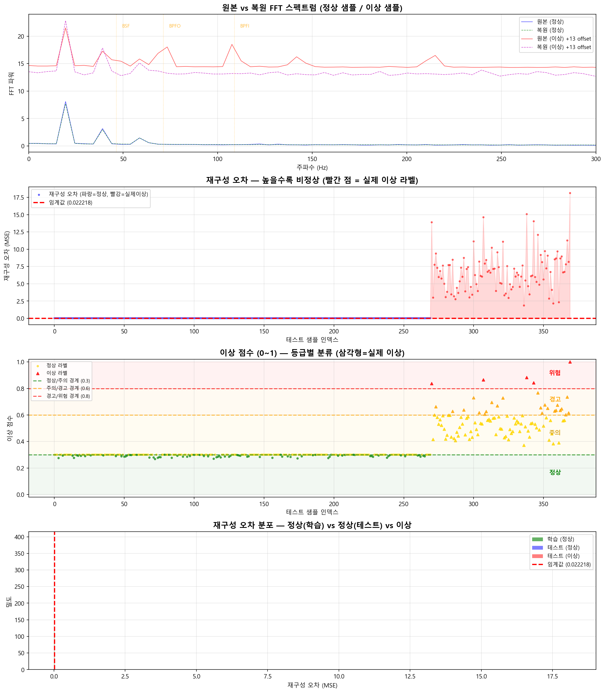

정상 운전 데이터 수집 (28일)
다양한 부하/RPM 조건에서 베어링 진동 데이터를 수집합니다. 이 기간에는 설비가 정상 상태여야 합니다.
AI MODEL #01 — BEARING ANOMALY DETECTION
LSTM Autoencoder 베어링 이상 탐지
FFT 주파수 스펙트럼(1024 bins)을 학습하여 정상/이상을 자동 판별하는 비지도 학습 모델
0 LSTM Autoencoder란?
LSTM Autoencoder는 시계열 데이터의 이상 탐지에 특화된 딥러닝 모델입니다. 정상 데이터만으로 학습하여 "정상이란 어떤 것인지"를 기억한 후, 새로운 데이터가 정상 범위를 벗어나면 이상으로 판단합니다.
LSTM Autoencoder 핵심 원리
이상 점수 = MSE(원본, 복원) = 1/n * Σ(x_i - x̂_i)²
x = 원본 FFT 스펙트럼 | x̂ = Autoencoder가 복원한 스펙트럼
정상이면 복원 잘됨 → 오차 작음 → 정상 판정
이상이면 복원 못함 → 오차 큼 → 이상 판정!
정상이면 복원 잘됨 → 오차 작음 → 정상 판정
이상이면 복원 못함 → 오차 큼 → 이상 판정!
비유: 악기 조율사
매일 정상 상태의 피아노 소리를 들어온 조율사가 있습니다.
정상 피아노: "이 소리 알아! 정상이야" → 재현 성공 → 오차 작음 = 정상
줄이 끊어진 피아노: "어? 이건 내가 모르는 소리!" → 재현 실패 → 오차 큼 = 이상!
LSTM이란?
LSTM (Long Short-Term Memory)
LSTM은 시계열 데이터에서 장기 의존성(long-term dependency)을 학습할 수 있는 순환 신경망(RNN)의 변형입니다.
- Cell State: 장기 기억을 저장하는 컨베이어 벨트
- Forget Gate: 불필요한 정보를 잊는 게이트
- Input Gate: 새 정보를 기억할지 결정하는 게이트
- Output Gate: 현재 출력에 어떤 정보를 내보낼지 결정하는 게이트
Autoencoder란?
Autoencoder (자기 부호화기)
입력 = 출력으로 학습하는 신경망입니다. 중간에 병목(Bottleneck)을 두어 데이터를 압축했다가 복원합니다.
정상 데이터만 학습하면, 학습하지 않은 패턴(이상)은 제대로 복원하지 못합니다. 이 복원 실패를 이상 탐지에 활용합니다.
1024
FFT bins
(주파수 해상도)
(주파수 해상도)
32
잠재 차원
(압축 크기)
(압축 크기)
비지도
학습 방식
(정상 데이터만)
(정상 데이터만)
<10ms
추론 시간
(실시간 가능)
(실시간 가능)
1 데이터 준비 — FFT 주파수 스펙트럼
슈레더 베어링에 부착된 진동 가속도계(VIB-A, VIB-B)에서 수집한 원시 진동 신호를 FFT(Fast Fourier Transform)로 변환하여 주파수 도메인의 스펙트럼을 생성합니다.
왜 FFT인가?
비유: 음악을 악보로 바꾸기
시간 도메인 (원시 신호): 귀로 듣는 음악 — "우우웅~" 하는 소리 전체
주파수 도메인 (FFT 변환): 악보로 분해 — "도(261Hz) + 미(330Hz) + 솔(392Hz)"
베어링 결함은 특정 주파수에서 에너지가 증가하는 패턴이므로, FFT가 필수!
FFT 변환 파이프라인
원시 진동
3축 가속도
10kHz 샘플링
→
윈도우 분할
1초 = 10,000
samples
→
FFT 변환
시간→주파수
스펙트럼
→
1024 bins
0~5000Hz
주파수 해상도
→
정규화
Min-Max
0~1 스케일링
베어링 결함 주파수 (Bearing Defect Frequencies)
베어링 각 부위의 고유 결함 주파수
베어링의 외륜, 내륜, 전동체, 보유기가 손상되면 각각 고유한 주파수에서 진동 에너지가 급증합니다.
- BPFO (Ball Pass Frequency Outer) ≈ 88Hz — 외륜 결함
- BPFI (Ball Pass Frequency Inner) ≈ 132Hz — 내륜 결함
- BSF (Ball Spin Frequency) ≈ 55Hz — 전동체(볼) 결함
- FTF (Fundamental Train Frequency) ≈ 8Hz — 보유기(케이지) 결함
FFT 스펙트럼 예시 (1024 bins):
주파수(Hz): 0 5 10 ... 55 ... 88 ... 132 ... 5000
bin0 bin1 bin2 bin11 bin18 bin27 bin1023
정상 상태: [0.02, 0.01, 0.03, ... 0.05, ... 0.04, ... 0.03, ... 0.01]
← 결함 주파수 에너지 낮음 (정상!)
이상 상태: [0.02, 0.01, 0.03, ... 0.85, ... 0.92, ... 0.78, ... 0.05]
← 결함 주파수 에너지 급증! (외륜 손상 의심!)
2 모델 구조 — Encoder → Latent → Decoder
LSTM Autoencoder는 크게 인코더(Encoder), 잠재 공간(Latent Space), 디코더(Decoder) 세 부분으로 구성됩니다.
입력
FFT 스펙트럼
1024 bins
→
LSTM Encoder
1024 → 512
→ 256 → 128
→
Latent (병목)
128 → 64
핵심만 압축
→
LSTM Decoder
64 → 128
→ 256 → 512
→
출력 (복원)
FFT 스펙트럼
1024 bins
왜 1024를 64로 압축하는가?
1024개 주파수 성분 중 정상 패턴의 핵심 특징만 64개로 추출합니다.
압축률 = 1024 ÷ 64 = 약 1/16 → 정상이면 이 16배 압축에서도 잘 복원되지만, 이상이면 핵심 특징에 포함되지 않아 복원 실패!
네트워크 상세 구조
# Encoder (입력 → 압축)
Input: (batch, seq_len=60, features=1024)
→ LSTM(1024, 512, return_sequences=True) # 1차 압축
→ LSTM(512, 256, return_sequences=True) # 2차 압축
→ LSTM(256, 128, return_sequences=False) # 3차 압축 (마지막 타임스텝)
→ Dense(64) # Bottleneck (병목)
# Decoder (압축 → 복원)
→ RepeatVector(60) # 시퀀스 길이만큼 반복
→ LSTM(64, 128, return_sequences=True) # 1차 복원
→ LSTM(128, 256, return_sequences=True) # 2차 복원
→ LSTM(256, 512, return_sequences=True) # 3차 복원
→ TimeDistributed(Dense(1024)) # 원본 차원으로 복원
하이퍼파라미터
| 파라미터 | 값 | 설명 |
|---|---|---|
| Sequence Length | 60 | 60초 (1초 FFT x 60 스텝) |
| Latent Dimension | 64 | 압축된 잠재 벡터 크기 |
| LSTM Hidden Units | 512→256→128 | 점진적 축소 |
| Learning Rate | 0.001 (Adam) | ReduceLROnPlateau 적용 |
| Loss Function | MSE | 재구성 오차 |
| Dropout | 0.2 | 과적합 방지 |
| Epochs | 100~200 | EarlyStopping patience=10 |
3 학습 과정 — 정상 데이터만으로 학습
핵심: 비지도 학습 (Unsupervised Learning)
LSTM Autoencoder는 "이것이 고장이다"라는 라벨 없이, 정상 운전 데이터만으로 학습합니다. 실제 베어링 고장 데이터는 매우 드물기 때문에 이 방식이 현실적입니다.
학습 단계
FFT 변환 (시간→주파수)
수집한 진동 신호를 1초 단위로 FFT 변환하여 1024개 주파수 bins의 스펙트럼을 생성합니다.
수집한 진동 신호를 1초 단위로 FFT 변환하여 1024개 주파수 bins의 스펙트럼을 생성합니다.
시퀀스 생성 (윈도우 60초)
연속된 60개의 FFT 스펙트럼을 하나의 시퀀스로 묶어 시간적 패턴을 학습할 수 있도록 합니다.
연속된 60개의 FFT 스펙트럼을 하나의 시퀀스로 묶어 시간적 패턴을 학습할 수 있도록 합니다.
모델 학습 (입력 = 출력)
Autoencoder는 입력과 동일한 출력을 내도록 학습합니다. 이 과정에서 정상 패턴의 핵심 특징을 잠재 공간에 학습합니다.
Autoencoder는 입력과 동일한 출력을 내도록 학습합니다. 이 과정에서 정상 패턴의 핵심 특징을 잠재 공간에 학습합니다.
임계값 설정
학습 데이터(정상)의 재구성 오차 상위 5%를 임계값으로 설정합니다. 이 값을 초과하면 이상으로 판정합니다.
학습 데이터(정상)의 재구성 오차 상위 5%를 임계값으로 설정합니다. 이 값을 초과하면 이상으로 판정합니다.
학습 목표 (Loss Function)
L = 1/N * Σ ||x_i - Decoder(Encoder(x_i))||²
입력 x를 인코더로 압축 → 디코더로 복원한 결과가 원본과 최대한 같아지도록 학습
MSE(Mean Squared Error)를 최소화
MSE(Mean Squared Error)를 최소화
비유: 화가의 기억력 훈련
화가에게 28일 동안 "정상 베어링 진동 파형"만 보여줍니다.
화가는 "봤다 → 기억 → 그리기"를 반복하며 정상 패턴을 완벽히 기억합니다.
이후 처음 보는 이상 패턴을 보여주면 → 기억에 없으므로 정확히 그릴 수 없음 → 복원 오차 발생!
4 이상 탐지 원리 — 재구성 오차 = 이상 점수
학습이 완료된 후, 새로운 데이터가 입력되면 Autoencoder가 이를 복원합니다. 복원 품질이 이상 판단의 핵심입니다.
정상 데이터가 입력되면
- 입력: [0.02, 0.05, 0.03, ...] (1024 bins)
- 복원: [0.02, 0.04, 0.03, ...] (거의 동일!)
- 오차: 0.0003 (매우 작음)
- 판정: 정상
이상 데이터가 입력되면
- 입력: [0.02, 0.85, 0.92, ...] (결함 주파수 급증)
- 복원: [0.02, 0.06, 0.04, ...] (정상 패턴으로 복원 시도)
- 오차: 0.3841 (매우 큼!)
- 판정: 이상!
이상 점수 정규화 (0~1)
재구성 오차를 0~1 범위의 이상 점수로 변환:
MSE ≤ 임계값: 점수 = 0.3 × (MSE / 임계값) → 0.0 ~ 0.3 (정상)
MSE > 임계값: 점수 = 0.3 + 0.7 × 초과비율 → 0.3 ~ 1.0 (이상)
등급별 판정 기준
| 이상 점수 | 등급 | 조치 | 알람 |
|---|---|---|---|
| 0.0 ~ 0.3 | 정상 | 정상 운전 | - |
| 0.3 ~ 0.6 | 주의 | 모니터링 강화 | 황색 경고 |
| 0.6 ~ 0.8 | 경고 | 정비 계획 수립 | 주황색 경고 |
| 0.8 ~ 1.0 | 위험 | 즉시 정비 / 정지 | 적색 긴급 알람 |
임계값(Threshold) 설정 원리
학습 데이터(정상 운전)의 재구성 오차 상위 5%(95 percentile)를 임계값으로 설정합니다.
의미: "정상 데이터 중에서도 5%는 이 정도 오차까지 나올 수 있다. 하지만 이 이상이면 정상이 아닐 가능성이 높다!"
임계값을 낮추면 → 더 민감 (거짓 경보 증가) | 임계값을 높이면 → 덜 민감 (놓칠 위험)
5 시뮬레이션 결과 분석

simulation.py 실행 결과 — 4개 그래프 해석
그래프 1
원본 vs 복원 FFT 스펙트럼
그래프에서 보이는 것:
파란 실선: 원본 FFT 스펙트럼 (정상 샘플) — 가속도계에서 측정한 실제 주파수 성분
초록 점선: 복원 FFT 스펙트럼 (정상 샘플) — Autoencoder가 복원한 결과
빨간 실선: 원본 FFT 스펙트럼 (이상 샘플) — 결함 주파수 에너지 급증!
자주 점선: 복원 FFT 스펙트럼 (이상 샘플) — 정상 패턴으로 복원 시도 → 불일치!
주황 세로선: BPFO(88Hz), BPFI(132Hz), BSF(55Hz) 결함 주파수 위치
정상 샘플: 파란 실선과 초록 점선이 거의 겹침 → 복원 성공 → 오차 작음 → 정상 판정
이상 샘플: 빨간 실선과 자주 점선이 크게 다름 → 복원 실패 → 오차 큼 → 이상 판정
결함 주파수 대역(BPFO/BPFI/BSF 부근)에서 이상 샘플의 에너지가 크게 증가한 것이 핵심
그래프 2
재구성 오차 시계열 — 가장 중요한 그래프!
이것이 LSTM Autoencoder의 핵심 출력입니다!
각 시점에서 FFT 스펙트럼이 정상 패턴과 얼마나 다른지를 보여줍니다. 빨간 점선(임계값) 위로 올라가는 구간이 이상!
읽는 방법:
파란 선이 낮게 유지됨:
→ "이 시점의 진동 스펙트럼은 내가 기억한 정상 패턴과 비슷하다"
→ 정상!
파란 선이 빨간 점선 위로 튀어오름:
→ "이 시점의 스펙트럼은 내가 모르는 패턴이다!"
→ 이상! → 빨간 영역으로 표시
빨간 점이 찍힌 위치:
→ 베어링 진동이 급증한 시점 (common_data에서 생성된 이상 이벤트)
→ LSTM이 자동으로 감지한 것!
그래프 3
이상 점수 (0~1) — 등급별 분류
그래프에서 보이는 것:
초록 점들: 정상 (0.0~0.3) — 대부분의 데이터
노란 점들: 주의 (0.3~0.6) — 모니터링 강화 필요
주황 점들: 경고 (0.6~0.8) — 정비 계획 수립
빨간 점들: 위험 (0.8~1.0) — 즉시 조치 필요
배경색 밴드: 각 등급의 범위를 시각적으로 표시
점선: 등급 간 경계선
이 그래프가 운영자에게 보여주는 것
실시간 대시보드에서 이 그래프를 보면, 현재 베어링 상태가 어떤 등급인지 한눈에 알 수 있습니다. "주의" 이상 등급이 지속되면 정비 일정을 잡아야 합니다.
그래프 4
재구성 오차 분포 — 정상(학습) vs 테스트
그래프에서 보이는 것:
초록 히스토그램: 학습 데이터(정상)의 오차 분포 — 대부분 낮은 오차에 집중
파란 히스토그램: 테스트 데이터의 오차 분포 — 대부분 정상과 겹치지만 오른쪽 꼬리가 김
빨간 점선: 임계값 — 이 오른쪽이 이상으로 판정되는 영역
읽는 방법:
초록과 파란 막대가 대부분 겹침 → 테스트 데이터의 대부분은 정상
파란 막대가 빨간 점선 오른쪽까지 퍼져 있음 → 일부가 이상!
6 알고리즘 특징 / 장점 / 단점
핵심 특징
LSTM Autoencoder의 3가지 핵심 특징
- 비지도 학습 (Unsupervised): 정상 데이터만 있으면 학습 가능. 고장 라벨 불필요.
- 시계열 인식 (Time-series Aware): LSTM이 진동 신호의 시간적 패턴과 장기 의존성을 학습.
- 재구성 기반 (Reconstruction-based): 복원 오차로 이상을 정량화. 해석 가능한 점수 출력.
장점 vs 단점
장점
- 라벨 불필요 — 이상(고장) 데이터 없이 정상 데이터만으로 학습 가능
- 시간 패턴 포착 — LSTM이 진동 신호의 시간적 변화를 인식
- 해석 가능한 점수 — 0~1의 연속적 이상 점수로 심각도 단계별 판단
- 미지 결함 감지 — 학습하지 않은 새로운 유형의 이상도 감지 가능
- 점진적 열화 추적 — 이상 점수의 추세로 베어링 수명 예측 가능
- 다변량 입력 — 여러 센서를 동시에 분석 가능
단점
- 학습 시간 — GPU 필요, 2~4시간 소요 (대규모 데이터 시)
- 임계값 튜닝 — 최적 임계값을 찾기 위해 현장 튜닝 필요
- 메모리 집약적 — LSTM 구조 자체가 메모리를 많이 사용
- 초기 데이터 의존 — 학습 기간(28일)의 데이터 품질이 성능을 결정
- 블랙박스 — "왜 이상인지"에 대한 직관적 설명이 어려움
- 정상 기준 변화 시 재학습 — 베어링 교체 후 재학습 필요
다른 이상 탐지 알고리즘과 비교
| LSTM Autoencoder | Isolation Forest | 단순 임계값 | |
|---|---|---|---|
| 학습 방식 | 비지도 (딥러닝) | 비지도 (앙상블) | 규칙 기반 |
| 시계열 인식 | O (LSTM) | X (포인트 기반) | X |
| 다변량 | O | O | 제한적 |
| 미지 결함 | O | O | X |
| 설명 가능성 | 중간 | 낮음 | 높음 |
| 학습 시간 | 길다 (GPU) | 짧다 | 없음 |
| 성능 | 높음 | 중간 | 낮음~중간 |
7 슈레더 적용 시나리오
슈레더 베어링 이상 탐지 시스템
폐배터리 슈레더의 양쪽 축(축A/축B) 베어링에 3축 진동 가속도계를 부착하여 실시간으로 이상을 감지합니다.
- 센서: VIB-A (축A 베어링), VIB-B (축B 베어링) — 각 3축, 10kHz 샘플링
- 추론: Jetson Orin에서 매 1초마다 FFT → LSTM → 이상 점수 산출
- 알람: 이상 점수 0.3 초과 시 모니터링 서버로 즉시 전송
운영 시나리오
초기 설치 및 학습 (Phase 1: 약 30일)
센서 설치 → 정상 운전 28일간 데이터 수집 → LSTM Autoencoder 학습 → ONNX 변환 → Edge 배포
센서 설치 → 정상 운전 28일간 데이터 수집 → LSTM Autoencoder 학습 → ONNX 변환 → Edge 배포
Shadow Mode 운영 (Phase 2: 14일)
실시간 추론 시작, 하지만 자동 조치 없이 알람만 기록. 임계값 미세 조정.
실시간 추론 시작, 하지만 자동 조치 없이 알람만 기록. 임계값 미세 조정.
실시간 운영 (Phase 3: 상시)
매 1초: 진동 → FFT → LSTM → 이상 점수 → 등급 판정 → 알람 (필요 시)
매 1초: 진동 → FFT → LSTM → 이상 점수 → 등급 판정 → 알람 (필요 시)
모델 재학습 (분기별)
3개월마다 최신 데이터로 Fine-tuning. 베어링 교체 시 즉시 재학습.
3개월마다 최신 데이터로 Fine-tuning. 베어링 교체 시 즉시 재학습.
실제 감지 가능한 결함 유형
| 결함 유형 | 주요 주파수 | 감지 방법 | 조기 감지 |
|---|---|---|---|
| 외륜(Outer Race) 결함 | BPFO ≈ 88Hz | BPFO 하모닉스 에너지 급증 | 48시간 전 |
| 내륜(Inner Race) 결함 | BPFI ≈ 132Hz | BPFI 대역 에너지 급증 | 48시간 전 |
| 전동체(Ball) 결함 | BSF ≈ 55Hz | BSF 주파수 에너지 변화 | 24시간 전 |
| 보유기(Cage) 결함 | FTF ≈ 8Hz | 저주파 대역 패턴 변화 | 24시간 전 |
| 윤활 부족 | 고주파 대역 | 전반적 고주파 에너지 증가 | 72시간 전 |
| 축 불균형 | 1x RPM (20Hz) | 축 회전 주파수 에너지 급증 | 48시간 전 |
기대 효과
95%+
감지율
(Detection Rate)
(Detection Rate)
48h+
조기 감지
(선행 시간)
(선행 시간)
<5%
오경보율
(False Positive)
(False Positive)
30%↓
정비 비용
(절감 효과)
(절감 효과)
핵심 가치
"사람이 24시간 감시할 수 없는 진동 패턴의 미세한 변화를 AI가 감지하여 고장 전에 경고합니다."
기존의 단순 임계값 방식(진동 RMS > 10mm/s 시 경보)은 이미 손상이 진행된 후에야 감지됩니다. LSTM Autoencoder는 FFT 스펙트럼의 미세한 패턴 변화를 포착하여 48시간 이상 앞서 경고할 수 있습니다.